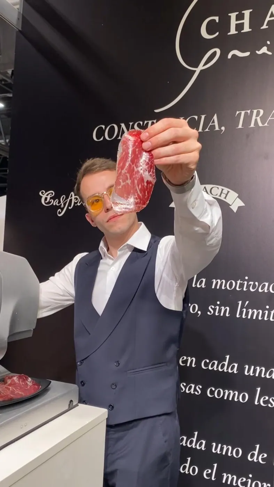
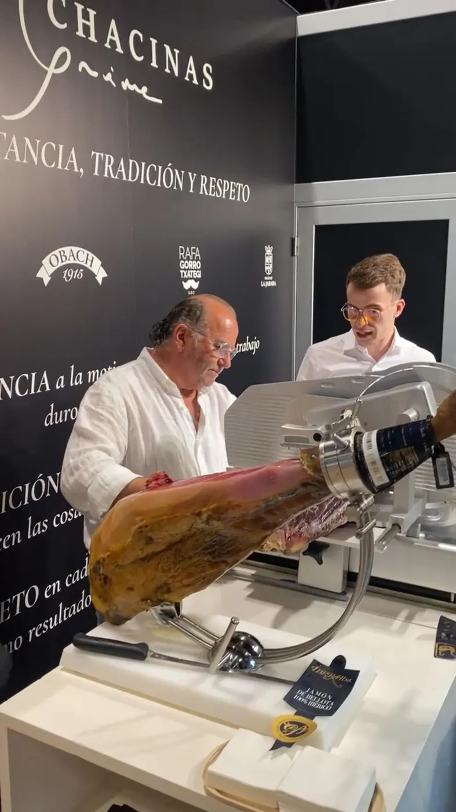
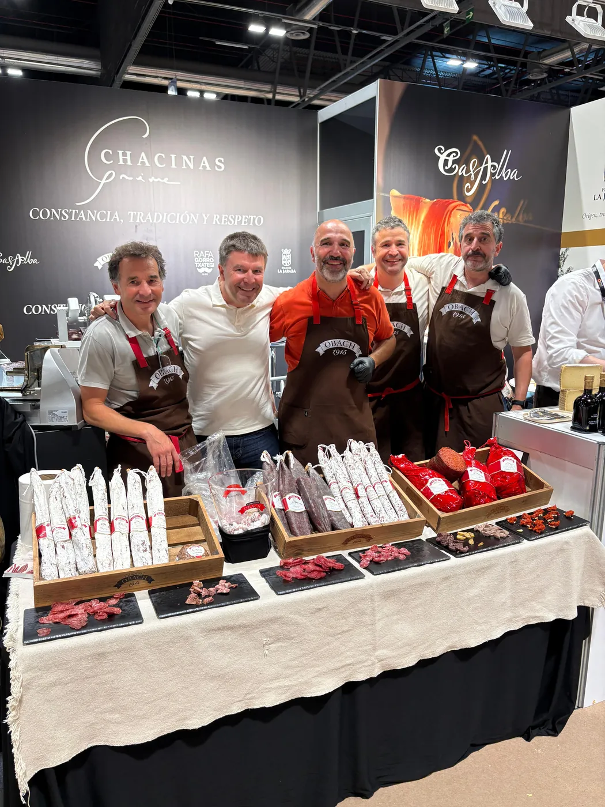
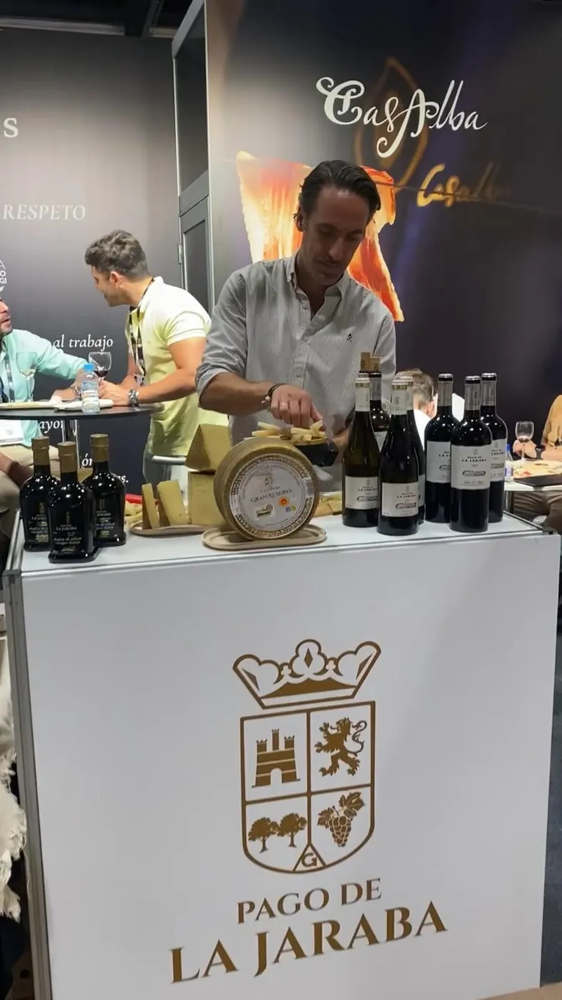
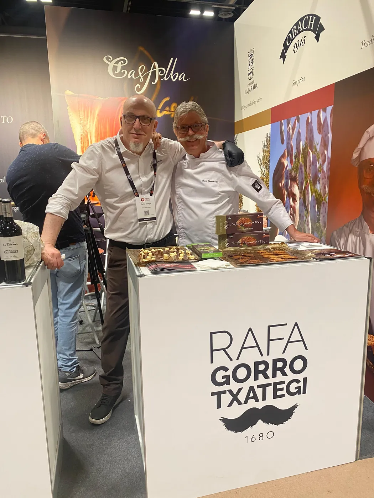

01
Conocimiento
Conocemos cada producto y a quien lo elabora. Solo trabajamos con casas en las que confiamos.

Somos una empresa especializada en chacinas y productos gastronómicos, nacida del conocimiento, la experiencia y la pasión por la buena gastronomía.

Detrás de cada producto hay personas que conocen profundamente su oficio.
Trabajamos con productores exigentes que respetan la materia, los procesos y sus tiempos, incluso cuando hacerlo así significa producir menos.
Conocemos cada producto y a quien lo elabora. Solo trabajamos con casas en las que confiamos.
Nuestra experiencia en el sector nos permite aconsejarte lo que mejor encaja con tu negocio.
Por la buena gastronomía y por el trabajo bien hecho: lo bien hecho, en estado prime.

CasalbaIbérico de bellota y cecinas
ObachEmbutido artesano de Organyà
Pago de la JarabaQueso, vino y aceite
Rafa GorrotxategiTxokolate y confitería